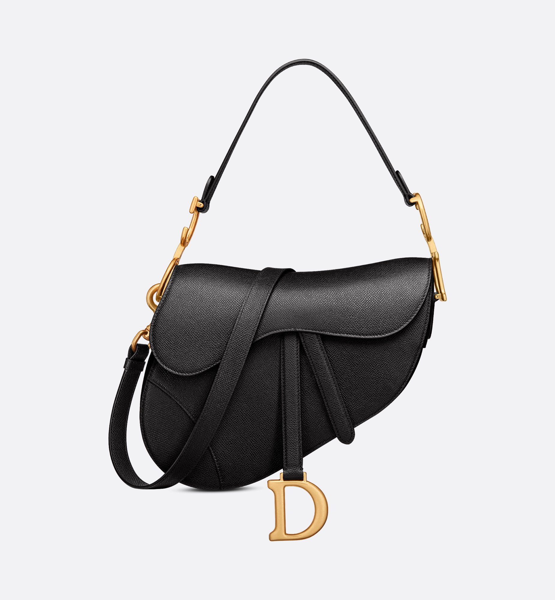
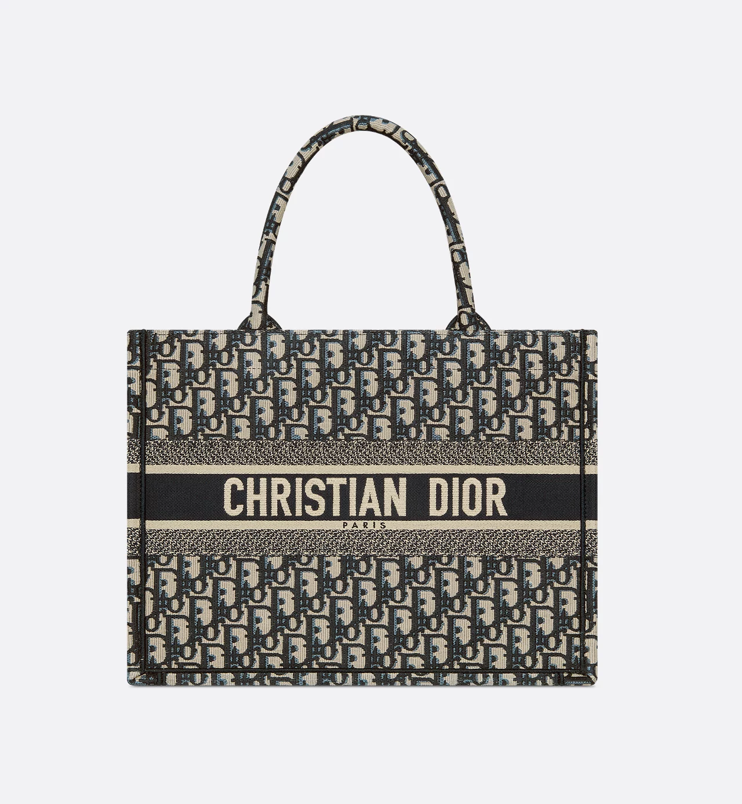

Lady Dior bag epitomizes vision of beauty. Sleek and refined, the timeless creation is crafted in black lambskin with stitching, creating quilted texture. Pale gold metal D.I.O.R. charms offer elegant appeal. Featuring a thin, removable leather shoulder strap, the bag can be carried by hand or worn crossbody.
Saddle

Saddle bag crafted in black grained calfskin, the design features a flap with a D stirrup strap, magnetic pull and an antique gold metal CD signature on sides of handle. Equipped with a thin removable strap,bag may be carried by hand, worn over the shoulder or crossbody.
Book Tote

Book Tote designed to hold daily essentials, the style is fully embroidered with the ecru and blue Dior Oblique motif. Adorned with the Christian Dior Paris signature on the front, the bag exemplifies the House's signature savoir-faire, may be carried by hand or worn over the shoulder.